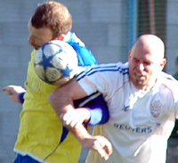
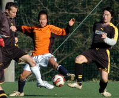
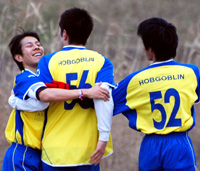
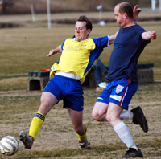
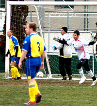
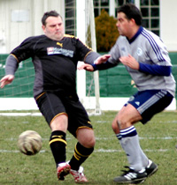
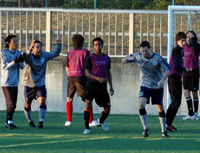

Awaiting Capitulation
Hachioji Park, Sunday 27th January,
Oh, but we just have to make it exciting don’t we. Not enough for Sala the workman like three nil win. Not on your life. Never has the old adage of ‘Two up and praying for a draw’ been more appropriate.
Three nil up and coasting with ten minutes left, Sala handed Jets two goals and had to endure a nervy final few minutes on Sunday night in Saitama. more ...
RC.
|  |
|
Lovers Tiff or new Dance move? Looks like the start of something beautiful!!
|
BFC Back on Top with 5-1 Win
Daito Bunka Uni, Saturday 27th January,
Even missing six or seven regular players, BFC breezed to a 5-1 win over the Geckoes to retake top spot in TML One, albeit having played a game more than Hibs.
003.5 - 'The name's Morson. James...etc, etc.'
Enlarge
003.5 - 'The name's Morson. James...etc, etc.'
Captain Jon Day struck twice and Yamagishi, Morson and Evans chipped in with superb goals in a one-sided game.
BFC were due a few goals and with a pre-match e-mail from former goalkeeper Jyrki demanding victory, it seemed rude not to, well, score a few. more ...
AH.
A Point Gained is 2 points Lost!!
YC&AC, Sunday 27th January,
One of those days where everybody was a little quiet and frustrated at the end. Both teams thinking about 2 points lost rather than the 1 gained, no doubt. YCAC because we'd created the better chances throughout and spurned all except one. Celts, maybe, because that one, a late equaliser, should have been disallowed in the view of their linesman. more ...
ST.
|  |
|
Dr Lowes displays his silky skills.
|
Panthers Say 'NO' to Getting Stoned
Daito Bunka Uni, Saturday 27th January,
After a 2 hour ride out to Daito Bunka we were ready to play, but were not sure if it was rugby or football as we saw the pitch! The sun was up and it was slightly warm apart from the nice cross wind blowing the light ball around.. more ...
LR.
Long Way to Go!
Daito Bunka Uni, Saturday 26th January,
An 85 minute train ride and a 10 minute bus to Daito Bunka were this Swiss’ reward for having been a dedicated founding member of the TML. Unfortunately, without grounds to offer, that’s our value to the league these days. “If you can find it, you can play” is the way it feels sometimes. more ...
KN.
Embassy Hold High-Flying Hibs
Hodogaya Koen, Saturday 26th January,
Few would have given the Embassy much hope yesterday of a result against top-of-the-table Hibs. However, the high level of commitment, which has never been in doubt, was finally rewarded with a result – a 2-2 draw in an entertaining affair in Hodogaya. more ...
FB.
Clash Grab First Victory
|  |
|
It's all hugs & smiles as Clash start scoring!
|
Misato, Sunday 20th January,
After a pretty strong season by Clash standards in 2006/2007 things this season have not been so good. Ok, we have been spanked more times than a cute high school girl has been by an ero-oyaji with cash to burn.
A change of formations though has brought a bit more cohesion to the team and that paid dividends against KGFC on the 20th January with a 3-0 victory.
After a gentle warm up and some stretches it was time to have a bit of a chat about the day's formation, tactics and attitude. more ...
CA.
YCAC Regain Composure to Upset Hibs
YC&AC, Sunday 20th January,
Perhaps we should just skip past the 1st 40 minutes of this one. It was pretty ugly especially for both sets of defenders who collectively seemed to lack the inclination to deal with any Incoming whether on the ground or in the air. I dont know why. It was bright and the pitch was hard and uneven, but no worse than normal, and the often gusting hilltop winds were mercifully missing.… more ...
ST.
|  |
|
Andy Gill skips past Vagabond Captain Richard Straughan on his way to goal!
|
Geckoes Thunder On.
Misato, Sunday 20th January,
Sid wants a match report for the Geckoes v Vagabonds game because he has some nice pictures to use with it, unfortunately this reporter played for the Clash straight after the game and followed that up with a rather large night out so apologies in advance if this report is either missing facts or inventing things that never happened… more ...
RM.
Sala Bane of YCAC
Hachioji Park, Sunday 13th January,
The New Year festivities over and done with, the weekly routine back into play, resolutions made and it was now time to blow the holiday cobwebs away and get back into winning ways. On a bitterly cold evening in Saitama the Sala men reconvened. more ...
PS.
Kitchen Sink Blues
Hachioji Park, Monday 14th January,
BFC launched the kitchen sink, the toaster, even the contents of the hoover bag at Saitama JETs on Monday yet somehow still failed to blow the door off its hinges. On another day this could have ended 8-0. more ...
KC.
|  |
|
Ken Hersche has a goal disallowed, but went on to score another in Lions 4-0 win
|
Clash No Match for Lions.
YC&AC, Sunday 13th January,
WS Clash were unlucky to lineup against a very strong Lions squad, similar to the squad that beat Maritizio 5-0. With some of the players having not played for 3-4 weeks, my personal expectations were 3-0, but a beautiful cross from Ahmed in the first 2 minutes that ended up in the back of the net from Ken's header from close range, made me think more?
BUT, celebrations were cut short when to everyone's amazement, the referee ruled out the goal for a foul on the keeper, who could'nt believe his luck more ...
HS.
Panthers finally uncaged at YCAC!
|  |
|
Nick Webb(L) finally leads his IFG ASIA, Tokyo Panthers team to their 1st Victory.
|
YC&AC, Sunday 13th January,
Despite conditions so early and cold it even had the British players shivering in their footie boots, the Panthers initially attacked the game with surprising pace. Facing the wind we were forced into shorter goal kicks than we are used to from Tomo and that put the midfield and defense slightly on the back foot. We didn’t let this get to us though and made a few attempts to sneak the ball up the wings with some delightful one touch passing, the Panthers manager and captain had finally come to realise all his shouting had not been in vain (a prospect he had been dreaming about fondly since the start of the season), but YCAC were not taking this laying down and defending well. After a few chances we thought our luck was in! more ...
LR.
Geckoes Make Most of Mud.
Oi Futo, Saturday 12th January,
Have you ever had the impression that the league is so far behind in the fixtures that whatever the conditions, you’re playing? Well, that was the general consensus between the Geckoes and Embassy players as they took to the soaking dirt pitch at Oi on Saturday afternoon.
Sid had called earlier in the day to confirm that the game was indeed on (despite pools of water across the pitch) and from kick off it was apparent that most of the Geckoes players would rather have been elsewhere as it was the Embassy who made much of the early running. more ...
RK.
YCAC Go Through Hell to Claim Silverware.
|  |
|
YCAC score the winner against NSP in the semi-finals of the New Year 7's
|
Footy Japan / IFG Asia New Year Soccer 7's, 2008. Oi Futo Dai Ni, Oi Chou Rinkai Koen. Saturday, January 5th & Sunday, January 8th, 2008.
PHOTO GALLERY CLICK HERE
YCAC overcame NSP - a team who's joint age didn't come anywhere close to makeshift YCAC keeper and stalwart defender Steve Taw's age, and went on to beat Hellcats - an extremely vocal team with a Japanese Ronaldinho look-and-play-alike, 2-1, to claim the prestigious Cup in the Footy Japan / IFG Asia New Year soccer 7's, 2008. more
JD.
|